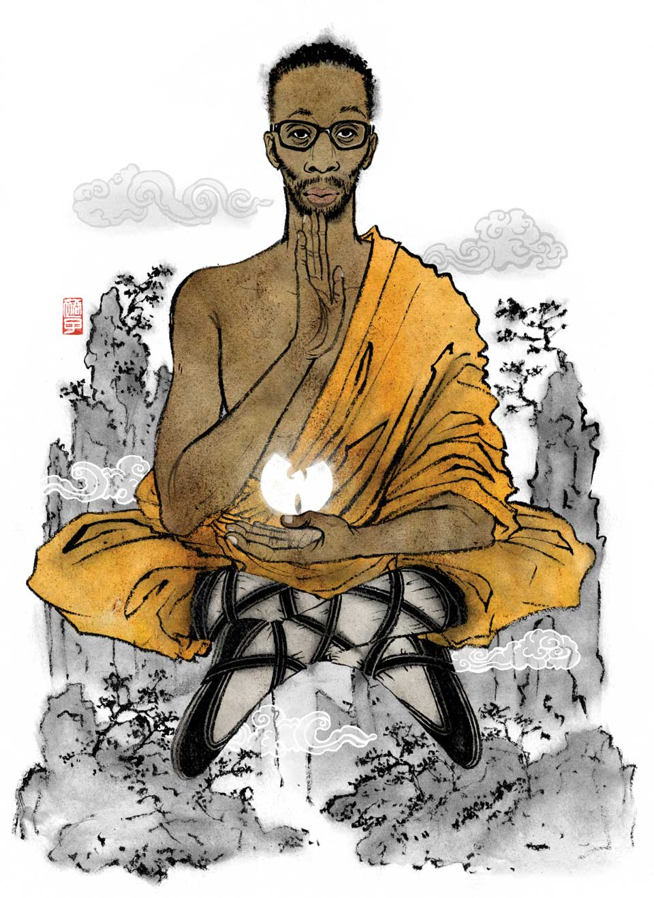
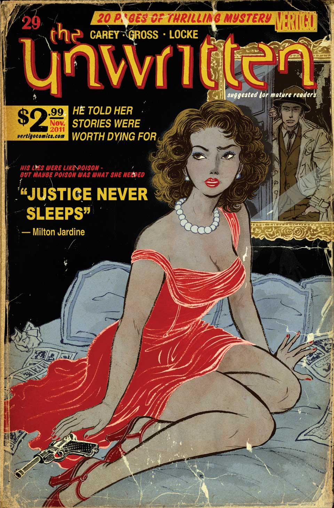
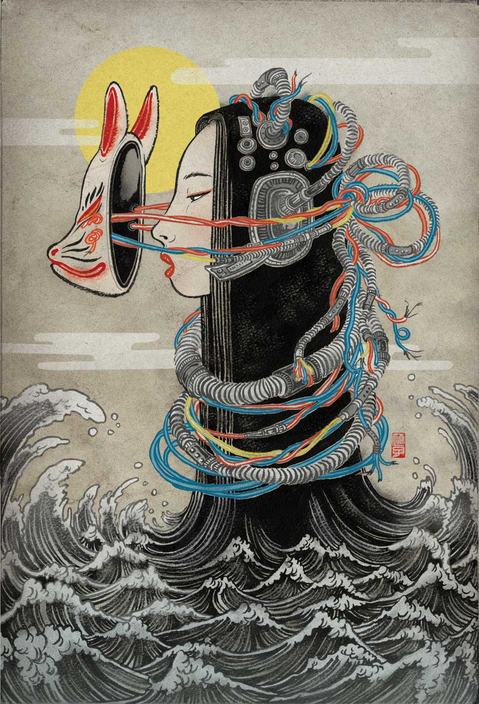
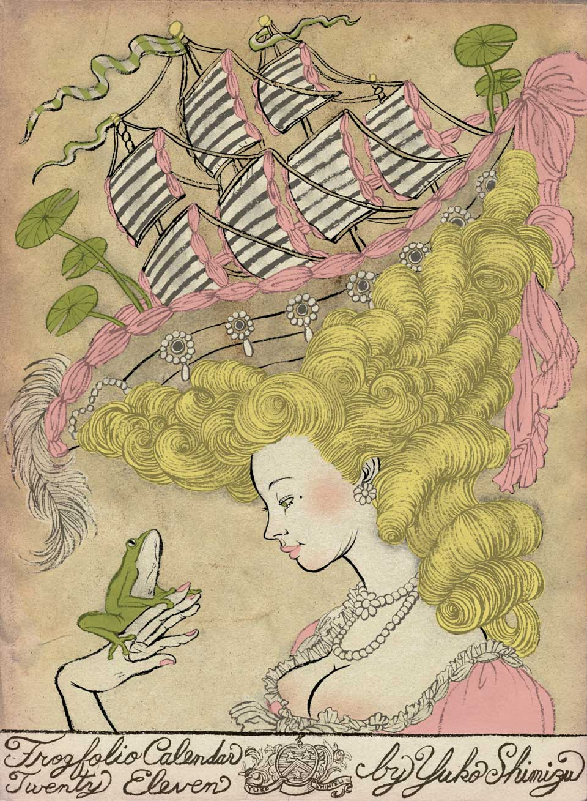

Poster and flyer image for the Skecthtravel Exhibition in the Kyoto International Manga Museum in Japan.
VIBE Magazine April/May 2013 issuefor Who is Music’s Number One Genius feature. Wu-Tang Clan’s RZA is ranked No.9.
Cover created for for DC Comics Vertigo series The Unwritten issue No. 29 Creators: Mike Carey and Peter GrossPublished: November 2011
The New Yorker magazine asked multiple artists to interpret their iconic Tilly cover for their Feb 13 & 20, 2023 issue.Mine is called Waiting for Spring where an Asian child with her mother is walking down still cold NY street
Originally created for 2011 calendar for Dellas Graphics. Also used as wrapping paper.Project was to create an image using frogs as theme: Marie Antoinette with Frog Prince, but Prince is more interested in riding the ship and sail away.